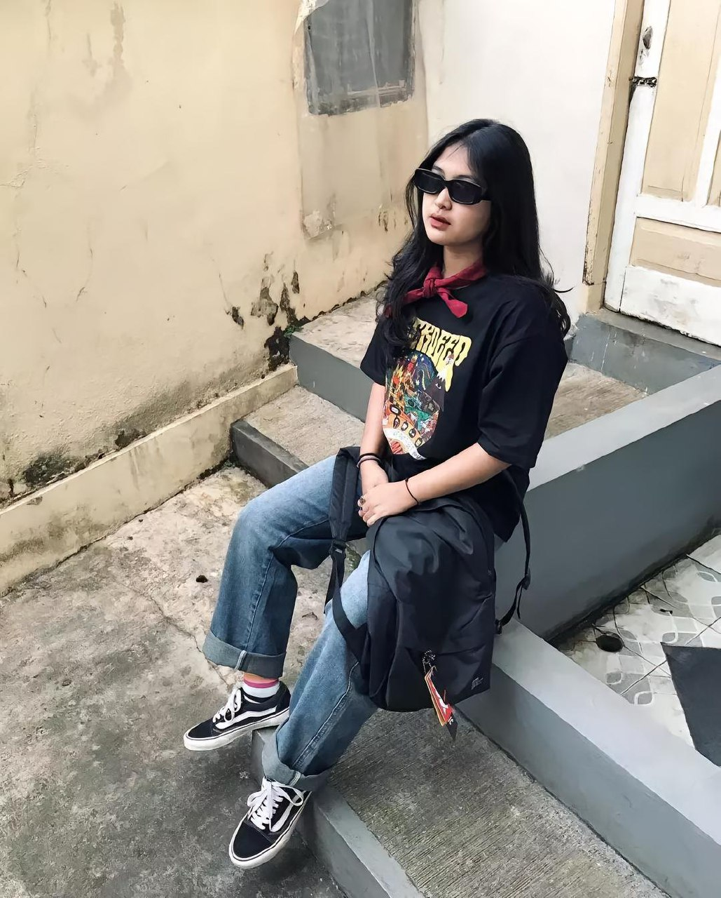
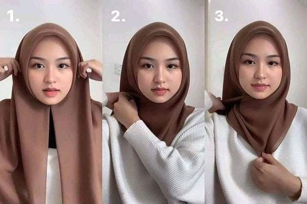
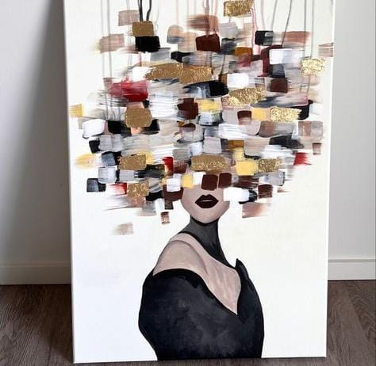
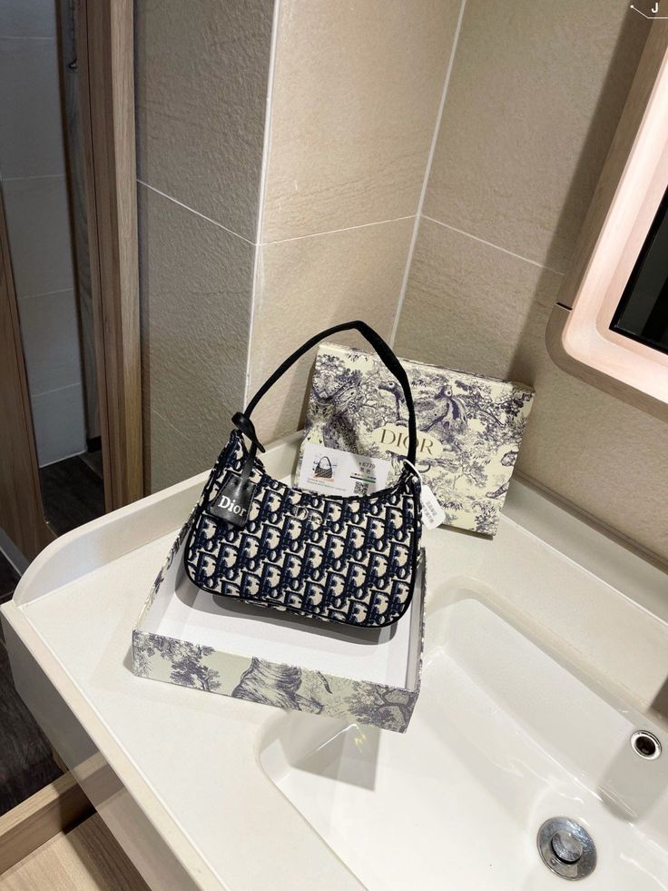

SkenaOutfit
Kaos oversize dengan celana denim, dipadukan dengan sneakers putih. KATA KATA DONG KAK HARI INI.
Gen Z hijab
Gen Z hijabers dikenal inovatif dalam memadupadankan hijab dengan berbagai outfit, dari casual hingga formal. Mereka tidak ragu untuk bereksperimen dengan warna, motif, dan aksesori.
Abstrak Lukisan
"Setiap goresan adalah ekspresi jiwa, merayakan kebebasan berkreasi."
Dior
Tas favorite semua kalangan wanita didunia